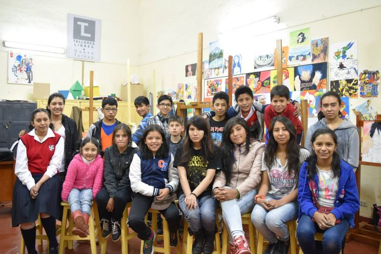

“Talleres Libres de Dibujo y Pintura 2017 de la Escuela Superior Autónoma de Bellas Artes del Cusco” está dirigido a la población en edad escolar, superior, profesionales, público en general desde los 10 años sin límite de edad, que cuenten con vocación para el arte, deseosos de incrementar sus conocimientos estéticos y explorar las distintas técnicas de Dibujo y Pintura.
Inicio de Clases 04 de Enero

| CICLO | MESES |
|---|---|
| I | Enero, Febrero y Marzo |
| II | Abril, Mayo y Junio |
| III | Julio, Agosto y Septiembre |
| IV | Octubre, Noviembre y Diciembre |
La Escuela Superior Autónoma de Bellas Artes “Diego Quispe Tito” de Cusco organiza, dirige, asesora y evalúa la ejecución del Programa de “TALLERES LIBRES” dirigido a los participantes interesados en desarrollar técnicas de dibujo y pintura. Este programa busca elevar su nivel de creatividad con la intención de mejorar la calidad creativa y el aprendizaje de los participantes.Este Programa se sustenta en la ley 24400 de Autonomía Académica, Administrativa y Económica, Ley Nº 26215 Ley de adecuación a la Ley Universitaria, Ley 29292. Y el D.S. 015-ED-85 Estatuto de la ESABAC.
La importancia de la proyección de la institución en servicio de la comunidad, cobra sentido ya que los avances científicos y tecnológicos son vertiginosos en los últimos años, por ende la respuesta del nuevo hombre debe de adecuarse a estos cambios para lo cual debe desarrollar la creatividad, instrumento que le servirá como complemento en sus labores cotidianos.
El Programa de “TALLERES LIBRES” ha de desarrollarse en la ciudad de Cusco, con la finalidad de desarrollar habilidades, destrezas y en respuesta a las múltiples peticiones existentes, con el propósito de brindar servicios de extensión a la población en edad escolar, superior y población adulta con la finalidad de difundir y generar el gusto estético por el arte y la vocación plástica por medio de talleres de Dibujo Pintura.
La Escuela Superior Autónoma de Bellas Artes “Diego Quispe Tito” tiene este programa de “Talleres libres” desde muchos años atrás habiendo una respuesta muy positiva porque el número de participantes se acrecienta en los últimos años.
Los “talleres libres”, lograron iniciar dinámicas de cambio en la capacidad creadora de los participantes, posibilitó y propició la participación de la población cusqueña de ambos sexos, poniendo en la agenda social la necesidad de brindar este servicio de desarrollo a través de las diferentes manifestaciones artísticas el desarrollo de la creatividad de los participantes.
Una planificación cuidadosa generó una participación de la población que han vivido experiencias muy agradables y con la participación pleno en el trabajo eminentemente práctico, los cuales al finalizar el programa hacen una exposición para evaluar el logro de sus objetivos con la participación del docente y el coordinador general.
Las propuestas y procesos de trabajo fueron diseñados y ejecutados para ser únicos frente a la realidad tan plural, diversa y rica como la nuestra.
Desde hace mas de tres años muchos participantes motivados por este curso decidieron postular a una vacante de nuestra institución los cuales tenían muchas inquietudes sobre su verdadera vocación u otros aspectos como su misma edad entre otras dudas aclaradas con la asesoría del actual docente, cumpliendo satisfactoriamente uno de los objetivos de este programa.
El contexto social de cambio y los avances científicos exigen hombres creativos, que se caractericen por su capacidad de aprender, investigar y sobre todo desarrollar habilidades artísticas para mejorar permanentemente su competitividad.El proceso educativo, entendido como un proceso continuo intencionado y sistemático de la persona, no debe limitarse a la formación científica, técnica, moral y psicomotricidad ni a áreas afines; por el contrario, requiere el desarrollo de la creatividad a través de las artes plásticas y las artes visuales que le ofrezcan alternativas de desarrollo permanente. El desafío reside en incorporarlo e involucrarlo en un proceso de desarrollo personal y actitudinal e intencional de continuidad en su formación nunca acabada.
El Programa de “Talleres libres” es el conjunto de lineamientos que orienta la participación de la población del Cusco, para promover la formación de la creatividad en concordancia con las potencialidades, necesidades y demandas sociales.
El programa de “Talleres libres” tiene los siguientes lineamientos:
El Programa de “Talleres libres” promueve redundando el desarrollo creativo del participante a través de desarrollo de técnicas de dibujo, pintura y otras formas artísticas, teniendo en cuenta sus aptitudes, además del desarrollo creativo fomenta el desarrollo de capacidades afectivos y valorativos de su persona, fortaleciendo su identidad, sus actitudes positivas a partir de la afirmación de su sentido de pertenencia a una comunidad.
El Programa de “Talleres libres” considera que el participante debe desarrollar habilidades motoras finas, el planteamiento de bocetos y sobre todo la composición del trabajo.
Asimismo, el programa promoverá el protagonismo del participante desarrollando sus capacidades para identificar sus potencialidades y necesidades, auto dirigir su propio proceso de formación y definir sus metas a corto plazo.
El programa considera el desarrollo de la personalidad del participante a través de experiencias vivenciales, para ello es importante el compromiso conjunto y cooperativo de los participantes, para lograr los objetivos previstos.
Para ello promueve la participación activa en la elaboración, ejecución y evaluación de los planes así como en los procesos de evaluación del programa que los lleve a identificar la línea base, sus avances, dificultades y logros.